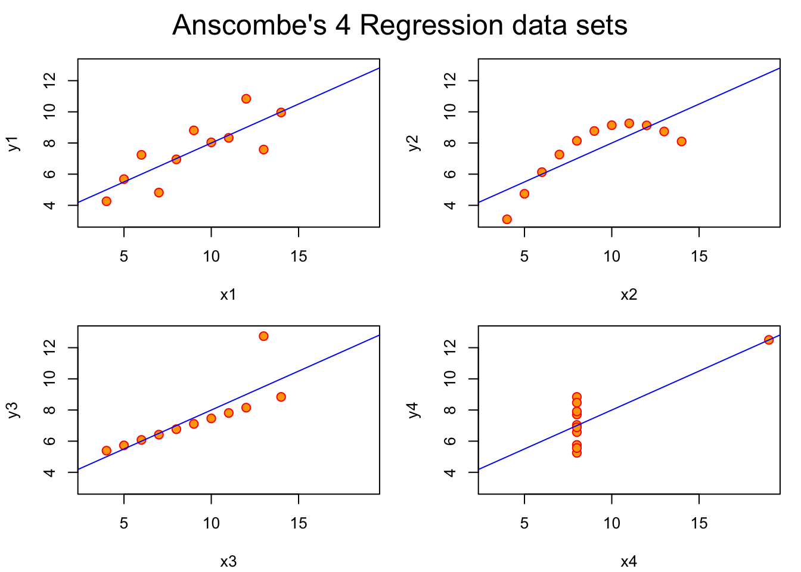

Code
## Anscombe (1973) Quartlet
data(anscombe) # Load Anscombe's data
## Simple version
plot(anscombe$x1,anscombe$y1)
# Create four model objects
lm1 <- lm(y1 ~ x1, data=anscombe)
#summary(lm1)
lm2 <- lm(y2 ~ x2, data=anscombe)
#summary(lm2)
lm3 <- lm(y3 ~ x3, data=anscombe)
#summary(lm3)
lm4 <- lm(y4 ~ x4, data=anscombe)
#summary(lm4)
plot(anscombe$x1,anscombe$y1)
abline(coefficients(lm1))
Code
plot(anscombe$x2,anscombe$y2)
abline(coefficients(lm2))
Code
plot(anscombe$x3,anscombe$y3)
abline(coefficients(lm3))
Code
plot(anscombe$x4,anscombe$y4)
abline(coefficients(lm4))
Code
## Fancy version (per help file)
ff <- y ~ x
mods <- setNames(as.list(1:4), paste0("lm", 1:4))
# Plot using for loop
for(i in 1:4) {
ff[2:3] <- lapply(paste0(c("y","x"), i), as.name)
## or ff[[2]] <- as.name(paste0("y", i))
## ff[[3]] <- as.name(paste0("x", i))
mods[[i]] <- lmi <- lm(ff, data = anscombe)
#print(anova(lmi))
}
#sapply(mods, coef) # Note the use of this function
#lapply(mods, function(fm) coef(summary(fm)))
# Preparing for the plots
op <- par(mfrow = c(2, 2), mar = 0.1+c(4,4,1,1), oma = c(0, 0, 2, 0))
# Plot charts using for loop
for(i in 1:4) {
ff[2:3] <- lapply(paste0(c("y","x"), i), as.name)
plot(ff, data = anscombe, col = "red", pch = 21, bg = "orange", cex = 1.2,
xlim = c(3, 19), ylim = c(3, 13))
abline(mods[[i]], col = "blue")
}
mtext("Anscombe's 4 Regression data sets", outer = TRUE, cex = 1.5)
Code
par(op)